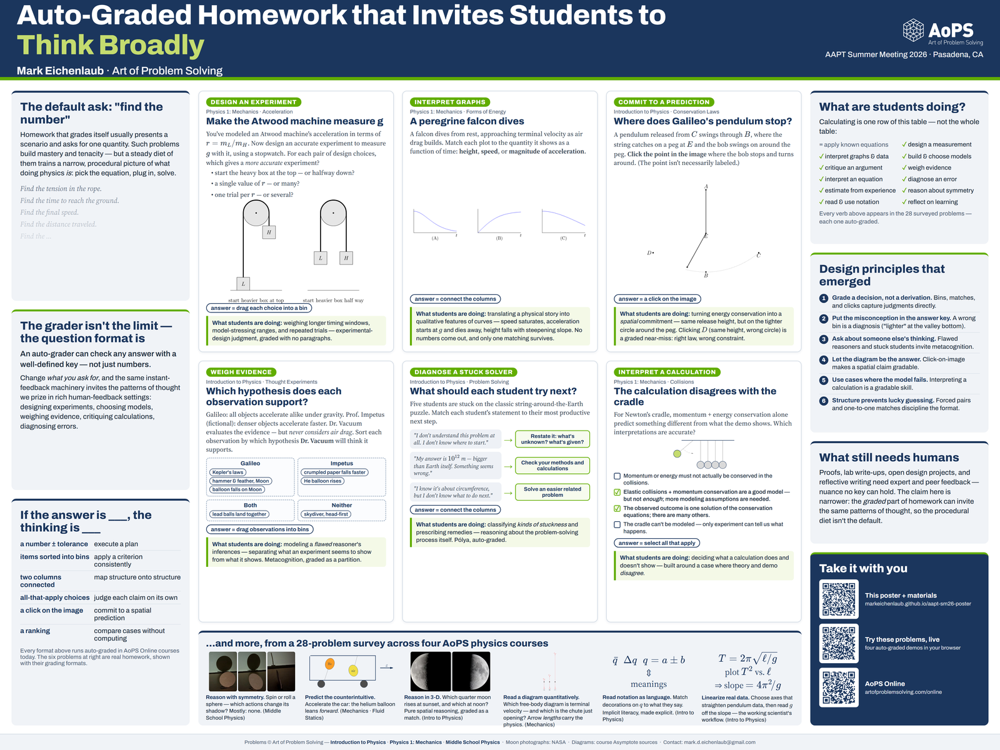

📄 Poster (PDF, 48″×36″)Full-resolution file, printable
🧪 Try the problemsFour live auto-graded interactives
📋 Official abstractAAPT SM26 program entry
🏫 AoPS OnlineThe courses these problems come from

Abstract
Homework problems with answers simple enough to be auto-graded tend to present a scenario and ask students to calculate a physical quantity. While requiring mastery, tenacity, and forms of creativity, these problems also often encourage a predictable, narrow, and almost procedural way of thinking about physics. Open-ended problems can engage students in designing experiments, suggesting new applications of ideas they've learned, making plans, writing proofs, and reflecting on their own learning. These problems typically require more nuanced feedback than an automatic grader provides. We suggest that, while auto-graded homework problems can't replace expert and peer feedback, they can be written to invite students to engage in many of the same patterns of thought that we value in scenarios of rich human feedback.